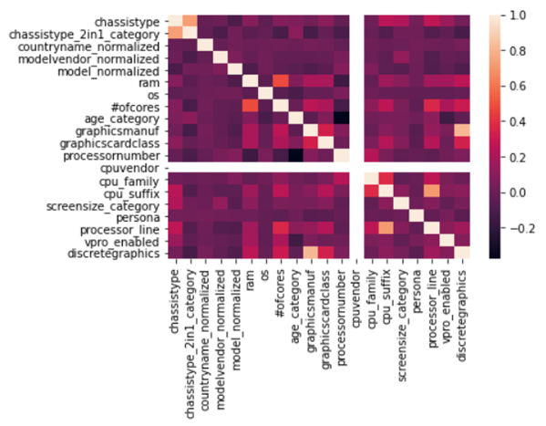

Intel User Persona & PC System Analysis
Project Introduction
In the PC industry, there are different computer setups for omnifarious PC users. Different types of customers have different needs and budget for their computers. For instance, we think that gamers prefer desktops or laptops with high-end GPU and CPU while office users prefer the ones with decent CPU and long battery life. Hence, being aware of the different needs from different customers could help computer retailers dramatically with marketing and resource allocation. With this background, we decided to build a machine learning model that can predict a users’ persona based on the information of their computers.
Background Info
There are 11 different types of personas (user type) in our dataset and we ignore the group of “Unknown”. We tried to explore the different computer setup for these groups.
To take a step further in our investigation, we first did some hypothesis testing for these groups based on some numerical features like the ram of PCs. We chose the paired T-test for the testing because we want to check the difference between each pair of groups. In the results (shown in the hypothesis testing notebook), most of our p-values were below the threshold of 0.05, which means there are some significant differences among these groups. The hypothesis testing further proved our guess so we decided to move on to some machine learning models.
Different Personas
| Persona | Count |
|---|---|
| Web User | 35153 |
| Casual User | 12810 |
| Gamer | 10611 |
| Casual Gamer | 10498 |
| Office/Productivity | 7519 |
| Content Creator/IT | 5883 |
| Communication | 5836 |
| Win Store App User | 4968 |
| Entertainment | 3768 |
| File & Network Sharer | 2231 |
| Unknown | 723 |
Methods
1. Data collection
To get the data from the PC system, we use the XLDSK and ATLSDK provided by Intel and build an input library. We are given the basic template of data collection by Intel. We added some useful metrics and used some APIs to get the data we want. We mainly collected the data related to the user’s battery, like capacity, percentage remaining, etc.. Intel also provided us the users’ system data so that we can have more information about the users.
ATLSDK:TAnalyzer Task Libraries (ATLs) are used by the Intel® System Usage Report (SUR) field data collector to expand and customize basic features and collection capabilities. These libraries are the preferred mechanism to supplement the Intel® SUR field data collector with new data collection capabilities, new business logics, or support for new logging formats.
Input libraries:Input Libraries – or ILs – are the data collection units of the Intel SUR collector. The nature of an IL is to allow for strong code reuse, thus reducing TTM. Use of existing ILs allows customers to leverage the expertise of other teams. Over time, customers can gradually build up a custom collection of ILs.
ILs expose at least one input (or metric). However, ILs can reconfigure themselves at any time to change the number and the nature of their inputs without requiring a stop and restart of the collector. If needed, this allows for the development of complex modules with the ability to adapt to various platform changes.
2.Data Cleaning and EDA:
After we got the data, there were some NaN and weird values. We cleaned the data and did some data transformation, like one-hot encodings on categorical features, so that we can do further tests and analysis.
When cleaning is done, we explore some important features we will use and see their distributions. We investigate some of the main features of the user’s. See in appendix 2.1 to 2.5.
3.Paired-T Tests On Numerical Features (RAM):
The goal of our hypothesis testing here is to check if there is a significant difference between the RAM of different types of users. The reason we use paired t-test is that two sample t-test is designed for testing differences between independent groups. We consider each persona as an independent group.
4.Chi-Square Tests for Independence on Categorical Features:
Our goal here is to find if the categorical features are related or independent from the personas (user types). A chi-square test for independence compares two variables in a contingency table to see if they are related. In a more general sense, it tests to see whether distributions of categorical variables differ from each other.
5.Machine learning models
There are three main points in our experiment setting:
We mainly use 6 different machine learning models to predict the persona: K Nearest Neighbours, Decision Tree, Random Forest, Neural Network, Stochastic Gradient Descent and Logistic Regression. For each of the models, the first split the data into training and testing sets, and then fit the training data into our model. Also, optimizing parameters and trails We compare the models’ performance using accuracy score and F1 score (F1 = 2 ✕ (precision * recall / precision + recall )).
- Start 5 trials for the whole experiment. In each trail, generate random train and test data.
- For each classifier, try different parameters.
- Use both accuracy and F1 score as metric
Research Question
Figure out the relationship between different features and user type.
Features
| Feature | Type | Feature | Type | |
|---|---|---|---|---|
| chassistype | Categorical | graphicscardclass | Categorical | |
| chassistype_2in1_category | Categorical | processornumber | Numerical | |
| countryname_normalized | Categorical | cpuvendor | Categorical | |
| modelvendor_normalized | Categorical | cpu_family | Categorical | |
| model_normalized | Categorical | cpu_suffix | Categorical | |
| ram | Numerical | screensize_category | Categorical | |
| os | Categorical | processor_line | Categorical | |
| *ofcores | Numerical | vpro_enabled | Categorical | |
| age_category | Categorical | discretegraphics | Categorical | |
| graphicsmanuf | Categorical |

ML Models Performance
Conclusion
Based on our feature analysis and hypothesis testing, we conclude that most of our selected features are correlated with persona, except the CPU vendor. This may because the vendors are not a key factor of the user system setting, a vendor can have various kinds of product. In this case, it makes sense that CPU vendor is not a related feature with persona.
From the performance analysis of all six models, we conclude that the Neural Network -- Multilayer Perceptron is the best fit for our data. The first reason we consider is the flexibility. They are very flexible and can be used generally to learn a mapping from inputs to outputs. This flexibility allows them to be applied to other types of data.